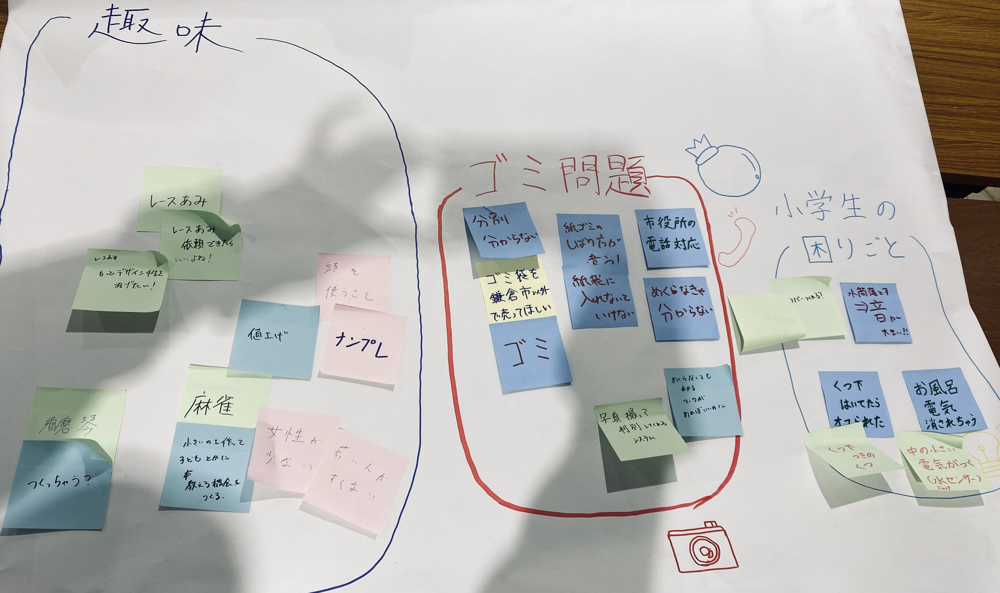
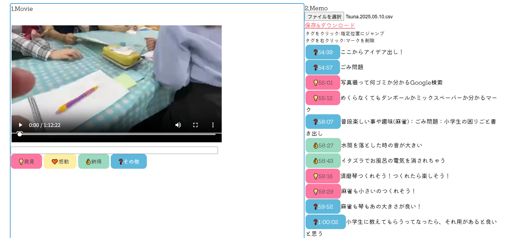
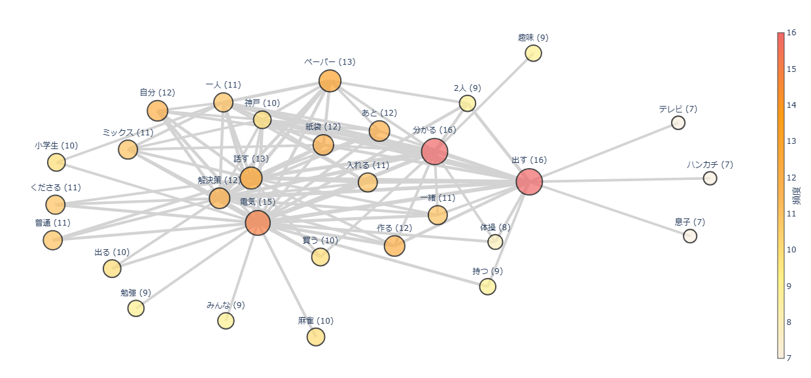
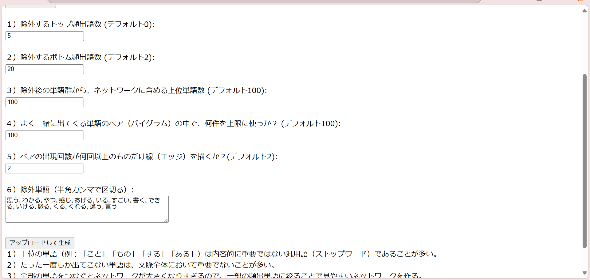

２０２５年５月１０日 インタビュー当日 場所：COCORUかまくら
神奈川大学ホームページ掲載
【やったこと】
- これからやることの共有事項について聞く
- インタビュー(動画撮影＋文字起こし)
- 問題解決の提案
- 模造紙に書き出して、グループごとに発表
帰宅後・・・
- 動画共有＋各自ダウンロード
- デジタルフィールドノート作成＋共起ネットワークの実行
- Slackで共有されたBoxにmp4・docx・csv・pngの４つのファイルを提出
模造紙(問題点と解決案を付箋に書き出し貼り付け)

デジタルフィールドノート

共起ネットワーク


インタビュー内容(聞いたこと→解決案)
趣味について
麻雀
- 女性や若者の利用者が少なく、男性の利用が多い。→小さくて簡易的な麻雀を作成し、子どもに教える機会を作る
- 頭の体操にもなる。手を動かすことも大事。
レース編み
- ガーゼのまわりにレース編みして、誰かにあげるのが好き→ガーゼを染めるなどして、デザイン性をあげたい
- ガーゼと糸の値上がり→依頼できるプラットフォームを作る(価値の付与)
須磨琴
- 弦が１本の琴を昔やっていた→つくったら、いろんな人に広がり、触れられる
小学生の困りごと
- 水筒を床に落としたら大きな音が鳴ってビックリ！→クッション性のあるカバーをつける
- 玄関先で靴下をはくのが遅くて怒られた→靴下付きの靴をつくる
- イタズラでお風呂の電気が消される→センサーでつく電気の設置
(消されて暗くなったらつく電気として、光センサーを考えた。
しかし、お風呂に入っていない間は常に暗いため、電気が常についてしまう。
そのため、お風呂に入っていたら水蒸気が発生するため、水センサーにしたら良いのではないかと考えた。)
(発表時は気づかなかったが、人感センサーにすればいいのではないかとも考えられた。2025.05.27)
鎌倉市のゴミ問題
- 分別が厳しくて分からない・市役所に電話して聞く手間がある→写真を撮って識別してくれるものをつくる
- お菓子の箱など、めくらないと分からない(茶色⇒段ボール、白色⇒ミックスペーパー)→見て分かるマークをつける
- 指定の袋で捨てないといけない(市外で購入できない)→配布するようにする
- リサイクル率１位だが、知られていない→情報が伝わる仕組みをつくる(回覧板やネット記事etc.)
その他(インタビュー前に聞いて、興味深かったこと)
海藻ポークについて
わかめを小さく砕き、それを食べさせて作られた肉。
肉をやわらかくする作用がある。
わかめを小さくする作業に、福祉が必要な人も関わっている。(地域共生社会の実現)
鎌倉にあるメトロポリタンホテル等で提供されている。
やってみて分かったこと
- 内容を１つに絞り、深くまで聞き出すことが難しかった。
- 言われた言葉を繰り返し使用することを心がけたが、上手く共起ネットワークに反映することが難しかった。
- 問題は他者が見て気づくことが多く、当事者はあまり気づいていないことが分かった。